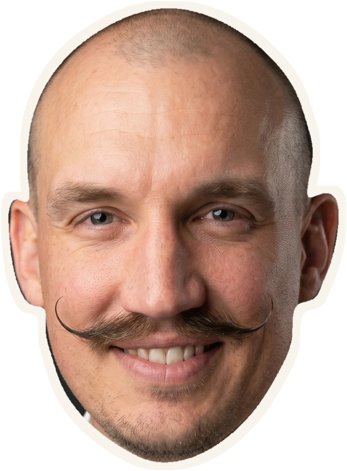

Insights, analytics & market research
Put evidence
to work.
Better questions.
Clearer choices.
I'm Phil. I lead insights, analytics and market research, and my doctorate looks at how organisations use evidence. I bring that academic side into commercial work.
Head of Insights, Analytics and Market Research at TalkTalk.
2026 Insight250 Winner · DBA researcher at Teesside University.
Named Insight250 Winner · Covered by CDO Magazine · Listed speaker, Qual360 Europe

the decision. Global recognitionInsight250 Winner
Class of 2026 ↗
Where I focus
From the customer question
to the commercial decision.
I work between research, behavioural data and the day-to-day conditions that decide whether anyone acts on them.
Understanding customers.
Putting what people say next to what they do, and the circumstances behind both.
02Decisions first.
Starting each research project from the choice someone has to make, before any fieldwork begins.
03Insight teams people listen to.
Building the habits, relationships and ways of working that turn analysts into commercial partners.
Evidence in practice
Research with
a practical purpose.
Organisational Evidence Capacity in Third Sector Policy Delivery.
How commissioning pressures, limited resources and governance affect the way organisations gather evidence and act on it.
Quantifying the Social Return on Public Sector Training Investment.
Empirical analysis of military service, human capital transfer, veteran career trajectories and social mobility.
A pracademic, in plain English
I work in business
and study it too.
The academic side makes me question assumptions and check what the evidence supports. The commercial side asks what a finding lets us do next week.
My background covers 12 years in British Army intelligence, insight leadership at dentsu and now TalkTalk. I'm a 2026 Insight250 winner, and my DBA at Teesside University looks at how organisations build the capacity to use evidence.
Read my full biography ↗Speaking & conversations
Give the room a question
it can act on.
Talks and masterclasses on KPI trees, military intelligence methods in commercial analytics, and leading insight teams.
Work together
Got a question to explore?
For conference talks, roundtables, research collaboration or a chat about insight leadership, send a short note about what you have in mind. A rough idea is enough.